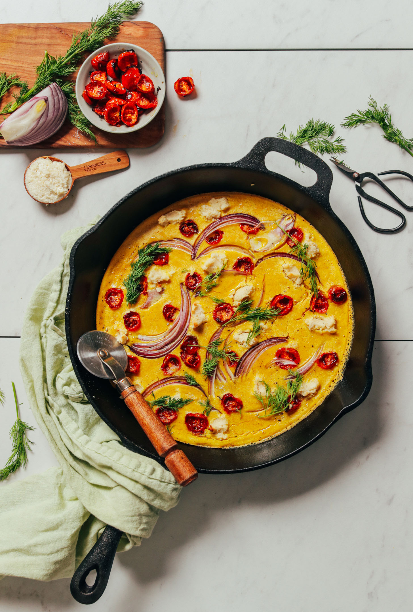

Easy Egg-Free Frittata

What is frittata?
Frittata is an egg-based Italian dish similar to an omelette or crustless
quiche or scrambled eggs, enriched with additional ingredients such as
meats, cheeses, or vegetables. The word frittata is Italian and roughly
translates to "fried".
This is a vegan spin o this dish.
Ingredients
-
3/4 cup split mung beans, rinsed (a.k.a. moong dal, NOT whole mung
beans*)
-
1 ¼ tsp black salt a.k.a. kala namak (or sub sea salt, though black salt
adds a magically “eggy” flavor)
- 1/2 tsp onion powder
- 3/4 tsp ground turmeric
- 1 ⅓ cup canned light coconut milk
-
2 Tbsp olive or avocado oil (plus more for cooking // if avoiding oil,
omit and use a nonstick pan)
- 1/4 cup chickpea flour (or white rice flour)
- 1 ¼ tsp baking powder
-
1 cup vegetables (we went for thinly sliced red onion and slow roasted
tomatoes)
-
1/4 cup Macadamia Nut “Cheese” (or other store-bought soft vegan cheese)
- Fresh herbs (such as dill, basil, or parsley // optional)
- Vegan Parmesan Cheese (optional)
Steps
-
Rinse split mung beans and add to a large mixing bowl. Cover with
lukewarm water and soak (covered) for at least 6 hours or overnight.
-
The next day (before baking) preheat oven to 375 degrees F (190 C).
-
Drain split mung beans and rinse well, then add to a high-speed blender.
Add remaining ingredients (black salt through baking powder) and blend
until creamy and smooth. Taste and adjust flavor as needed, adding more
black salt for “eggy” flavor, onion powder for overall flavor, and
turmeric for color. The batter should be thin and pourable, but not too
watery. Add more chickpea flour if too thin, or more coconut milk if too
thick.
-
Heat a large (12-inch) oven safe skillet over medium heat (we prefer
cast iron). Lightly oil, making sure oil coats the entire surface. Once
hot, add the egg mixture and top with your veggies (such as thinly
sliced onion and roasted tomatoes) and nut cheese in small spoonfuls.
-
Immediately transfer to the preheated oven and bake 10-15 minutes
(uncovered), or until the edges appear dry and it’s very slightly
browned. Serve as is, or with fresh herbs, vegan parmesan cheese, or
toast.
-
Store cooked leftovers covered in the refrigerator up to 2-3 days.
Reheat in the microwave or 350 degree F (176 C) oven until hot. Cooked
frittata not freezer-friendly. Batter should keep in the refrigerator
for several days and in the freezer up to 1 month.